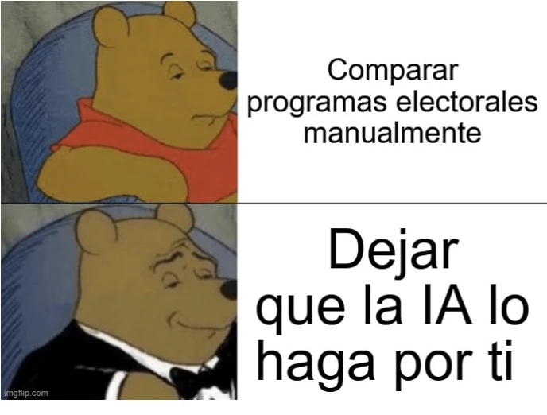

estrategIA #36 ·
Comparar programas sin perderse
El contexto
Antes de las elecciones europeas de 2024, la newsletter probó cómo comparar programas de varios partidos con IA. Winnie the Pooh se viste de etiqueta al elegir esa ayuda frente a la lectura y comparación manual de todos los documentos.
Publicado en: estrategIA #36: Innovaciones en IA: mejoras en el análisis de datos políticos y comparación de programas electorales utilizando los últimos modelos
Leer el texto de la imagen
Comparar programas electorales manualmente Dejar que la IA lo haga por ti
Marca de la herramienta visible en el original: imgflip.com.